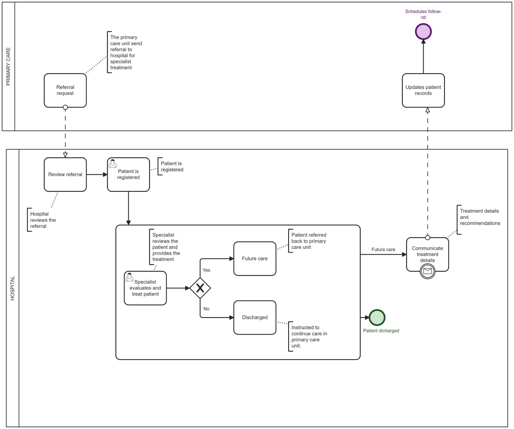

Below is the BPMN model for the ETL pipeline:
The BPMN model represents the process of a patient being referred by a Primary Care Clinic to a hospital for specialist treatment; this model clearly identifies tasks, decisions, and communication. The process begins in the Primary Care Clinic, where a Referral Request is initiated, User Task. Upon receiving the referral, a Review Referral task and another User Task will be used to verify the referral's details. Once the referral is approved, the Patient Registration task is carried out. This task is followed by the Specialist Evaluates and Treats Patient task, where a specialist provides the necessary treatment. This evaluation and treatment are modeled as a User Task, reflecting the specialist's expertise and direct interaction with the patient.
After treatment, an Exclusive Gateway is used to determine the next step. If further care is required, the patient is referred back to the Primary Care Clinic through the Refer Back to Primary Care Clinic task, a User Task. Alternatively, if the patient’s issue is resolved, they are discharged through the Discharge Patient task, which involves protocols to ensure a smooth discharge. In the final stage, the hospital communicates treatment details and recommendations to the Primary Care Clinic, represented by the Communicate Treatment Details task. At the Primary Care Clinic, staff perform a User Task to update the patient’s medical records and schedule follow-up care if necessary. This BPMN model effectively represents the collaboration between the Primary Care Clinic and the hospital, ensuring clear communication, thorough documentation, and seamless patient care throughout the process.